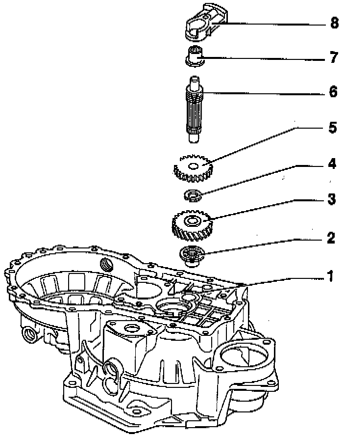
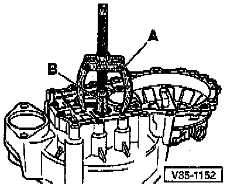
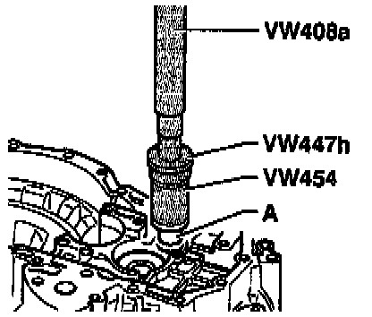
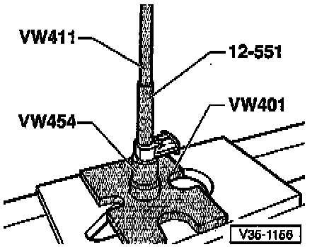

Reverse Idler Shaft

COMPONENT NOTES AND INFORMATION
NOTE: After disassembly, always replace needle roller bearings in clutch housing and reverse idler shaft support.
1 - Clutch housing
2 - Needle roller bearing
- Pulling out, refer to Fig. 1, below.
- Pressing in, refer to Fig. 2, below.
3 - Reverse gear
4 - Circlip
- If removed, always replace
5 - Reverse sliding gear
- Before replacing gear, remove circlip
- Shoulder faces toward reverse gear -3-
6 - Reverse idler shaft
- Removing, refer to Disassembly/Assembly Procedure.
7 - Needle roller bearing
- Pressing out, refer to Fig. 3, below.
- Pressing in, refer to Fig. 4, below.
8 - Reverse idler shaft support
- Removing/installing, refer to Disassembly/Assembly Procedure.
PROCEDURES

Fig. 1 Pulling needle roller bearing from clutch housing
A - Counter support e.g. Kukko 22/1
B - Internal extractor, 14.5 to 18.5 mm e.g. US 8028 or Kukko 12/2
NOTE: Bearing is destroyed during removal and must be replaced.

Fig. 2 Pressing needle roller bearing into clutch housing
A - Needle roller bearing

Fig. 3 Pressing needle roller bearing out of reverse idler shaft support

Fig. 4 Pressing needle roller bearing into reverse idler shaft support